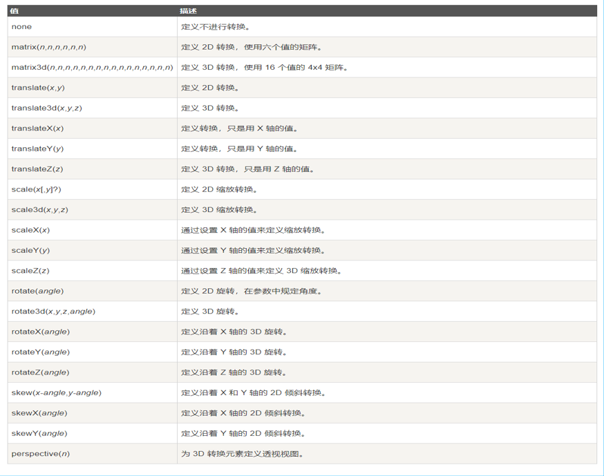
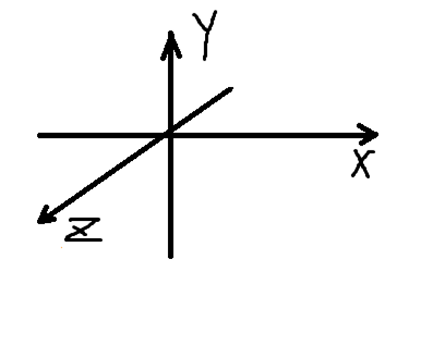
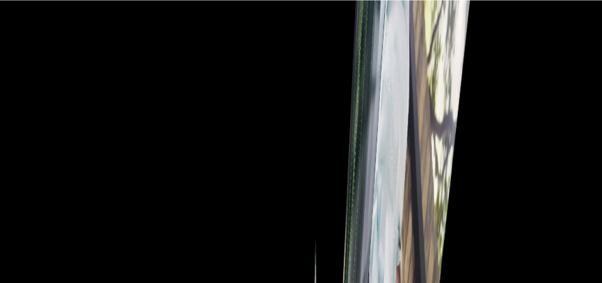
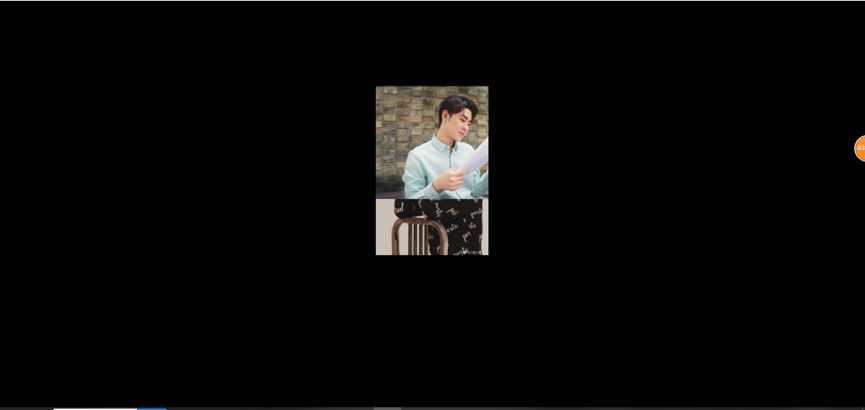
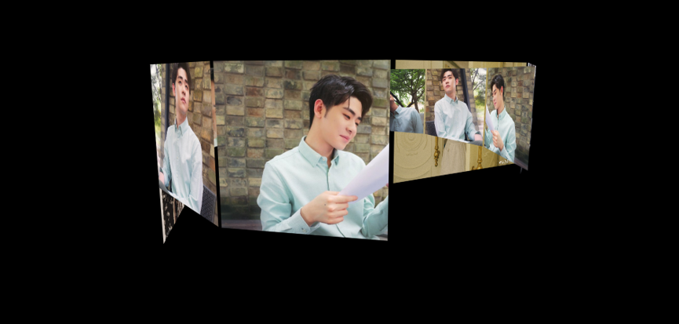
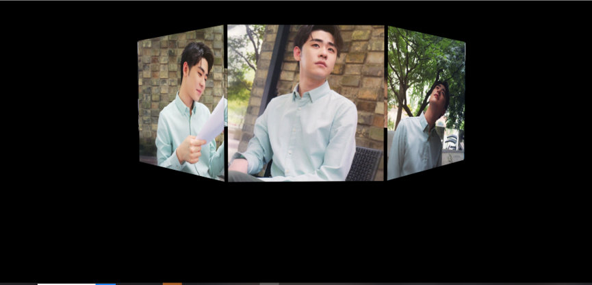
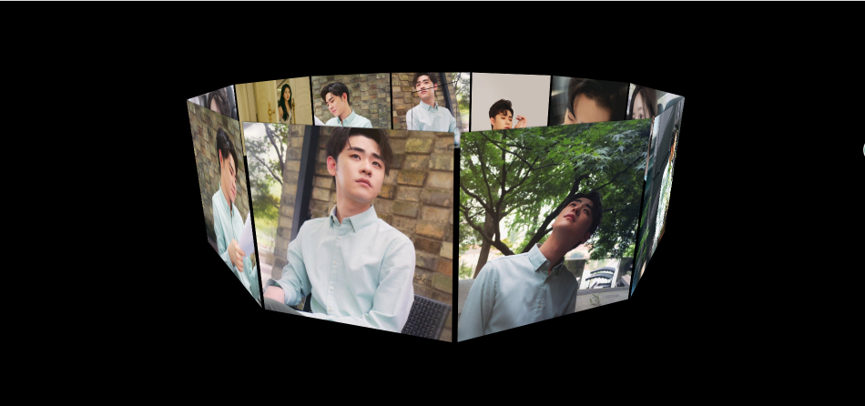

多少像素的3D元素是从视图的perspective属性定义。这个属性允许你改变3D元素是怎样查看透视图。定义时的perspective属性，它是一个元素的子元素，透视图，而不是元素本身。
注意：perspective 属性只影响 3D 转换元素。
应用于元素的2D或3D转换。这个属性允许你将元素旋转，缩放，移动，倾斜等。
语法：
transform: none|transform-functions

transform中的x、y、z、轴的含义如图所示：

1) 设置一个div，为其加上perspective的属性(撑开空间)，方便后边观察效果
#perspective{
perspective: 700px;
}/*此属性是实现旋转木马的要点，能产生空间上的距离/延伸感。在此盒子中放置图片的盒子便可以实现向网页内部延伸的感觉*/

2) 设置装有图片盒子的容器wrap,使其居中显示，并加上position:relative的属性，让其内的图片定位。并加上transform属性。
#wrap{
position: relative;
width: 200px;
height: 200px;
margin: 150px auto;
border: 1px solid black;
transform-style: preserve-3d; /*实现3d效果的关键步骤，与boxshadow配合使用可以忽略层级问题，之后会说到*/
transform: rotateX(0deg) rotateY(0deg) ;//为盒子的3d效果和旋转效果做准备。
}
3) 加入图片，设置样式，使用position:absolute；使其重叠。以数组的形式获取，并根据其数组长度length来计算图片的旋转角度。
#wrap img{
position: absolute;
width: 200px;
}
<script>
var oImg = document.getElementsByTagName('img')；
var Deg = 360/oImg.length;
oWrap = document.getElementById('wrap'); /*顺便拿一下容器*/
</script>
4) 遍历数组，使其沿y轴旋转Deg度。此处使用了原型，使用foreach方法遍历了数组，让其内每个图片都执行了function(el,index)。使用index下标区分开了数组内每个图片需要旋转的不同度数（第一张0°（Deg * 0） 第二张Deg度 （Deg * 1） 第三张（Deg * 2）度...）
/*oImg表示数组对象，function(el,index)表示数组内每个对象要执行的函数，index为其下标。*/
Array.prototype.forEach.call(oImg,function(el,index){
el.style.transform = "rotateY("+Deg*index+"deg)translateZ(350px)";
// el.style.zIndex = -index;
el.style.transition = "transform 1s "+ index*0.1 +"s";
});

5) 做完上一步操作后，让盒子其内图片沿Z轴平移translateZ(350px)属性便能初步看到3d效果，但此时会发现容器内图片数组出现了层级问题（Zindex）导致了理应在后面的图片能被显示出来。

/*加上沿z扩散*/
<script>
Array.prototype.forEach.call(oImg,function(el,index){
el.style.transform = "rotateY("+Deg*index+"deg)translateZ(350px)"; //沿z轴扩散350px
})
</script>
——-执行完毕后——–加上属性观察效果———
#wrap{
width: 200px;
height: 200px;
position: relative;
margin:150px auto;
transform-style: preserve-3d; /*实现3d效果的关键步骤，与boxshadow配合使用可以忽略层级问题*/
}
#wrap img{
position: absolute;
width: 200px;
box-shadow: 0px 0px 1px #000000; /* 用box-shadow配合transform-style: preserve-3d;可以忽略层级问题 *
}

6) 这时候为装有图片的盒子加上transform:rotateX(-15deg);便能看到较为完整的3d效果了，此时实现盒子绕y轴转动便可实现旋转木马的效果。

7) 单纯使盒子转动就可以实现图像，我们使用setinterval来不断使其旋转。但如果想使用鼠标拖动实现旋转木马，则需要再加一些代码，使装有盒子的容器(wrap)能够根据鼠标坐标变化绕容器(wrap)自身y轴转动。
var nowX ,nowY,//当前鼠标坐标
lastX ,lastY ,//上一次鼠标坐标
minusX,minusY ,//距离差
roX = -10,roY = 0;//总旋转度数
window.onmousedown = function(ev){
var ev = ev;//获得事件源
lastX = ev.clientX;lastY = ev.clientY;
this.onmousemove = function(ev){
var ev = ev;//获得事件源
nowX = ev.clientX;nowY = ev.clientY;//获得当前坐标
minusX = nowX - lastX;minusY = nowY - lastY;//坐标差
roY += minusX;//累计差值
roX -= minusY;//累计差值
oWrap.style.transform = "rotateX("+roX+"deg)"
+"rotateY("+roY+"deg)";
lastX = nowX;lastY = nowY;//移动末期现坐标变为旧坐标
}
this.onmouseup = function(){
this.onmousemove = null;//取消鼠标移动的影响
// this.onmousedown = null;
}
}
}